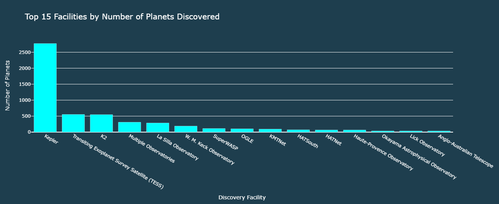

COCONUTS-2b
A planet with the longest orbital period around a single star.
"Explore data, research, and insights to deepen your understanding of distant worlds. Unlock the mysteries of exoplanets through interactive tools and scientific articles."
Start ExploringExoplanets, or planets beyond our solar system, have become one of the most exciting fields in astronomy since the first discovery in 1992. That year marked the identification of the first exoplanet, signaling the start of a new era in our understanding of the universe. In 2016, the year saw the peak of exoplanet findings. Interestingly, the discovery rate jumped notably in 2014 before returning to a steadier pace and reaching its highest record in 2016.

When it comes to the techniques used to find these distant worlds, The Transit Method stands out as the most commonly employed. This method, which involves detecting a planet as it passes in front of its host star, has significantly contributed to the number of discoveries over the years. In contrast, The Radial Velocity Method, though used less frequently, has been applied steadily across various years.
The role of observation facilities has been crucial in advancing exoplanet research. Kepler, for instance, is responsible for discovering an impressive 2,773 exoplanets, more than any other facility. The The Arecibo Observatory, however, holds the distinction of discovering the very first exoplanet, marking a historic milestone in space exploration.
Now you have know more about exoplanets, What about discovering some of them.
"Unlock the secrets of distant worlds with a single click."